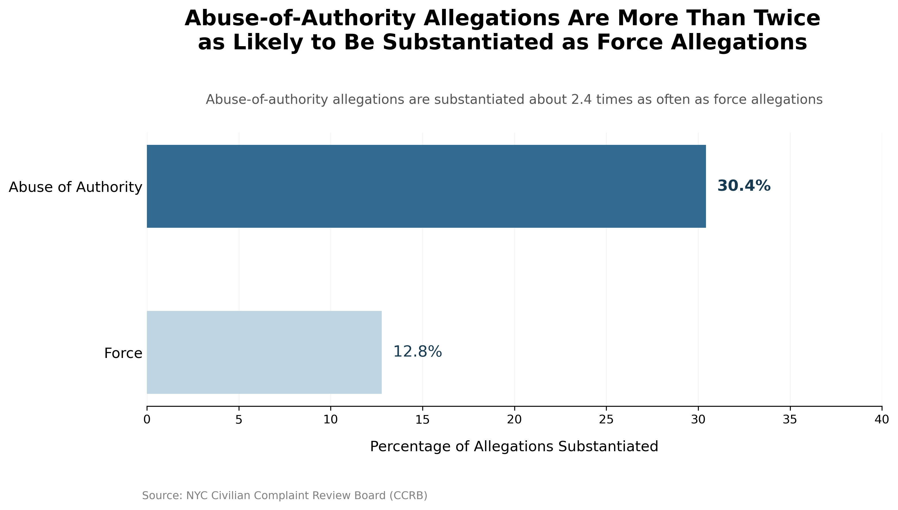
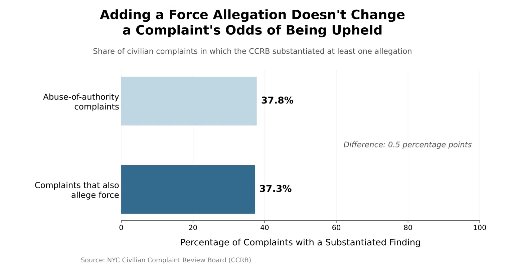

The NYC Civilian Complaint Review Board is more likely to substantiate allegations of abuse of authority than allegations of excessive force.
FOR the Proposition

Design Decisions and Rationale:
- Score: -1. X-axis cut off at 40% so the bars look bigger. This is slightly deceptive as the percentages would look alot closer without scaling the 30.4% to be the majority of the graph.
- Score: 0. Faded color on the force allegation percentage bar along with non bolded text on the percentage to make it look weaker. This is not that deceptive as it more so subtely highlights the difference between the two percentages.
- Score: -0.5. “2.4 times as likely” ratio framing instead of the absolute 17.6 point gap. This somewhat deceptive as the percentages themselves do not have a huge difference but seem much bigger by framing it with a ratio.
AGAINST the Proposition

Design Decisions and Rationale:
- Score: -1, Measures complaints instead of allegations, so a force complaint counts as upheld even if only a non-force allegation was substantiated. Makes the data seem alot closer than it actually is.
- Score: 2, to 100% axis makes the gap look tiny. With the difference being only 0.5 percentage points. This is pretty transparent in showing the small difference between the bars.
- Score: 0, Title implies a causal effect (“adding a force allegation”).
Final Reflection
After creating multiple data visualizations and exploratatory analysis it was rather straightforward in being able to design visualizations for both sides of an arguement. It was relatively easy to try and show emphasis on a certain percentage or data point by changing the colors and bolding descriptors of the data.